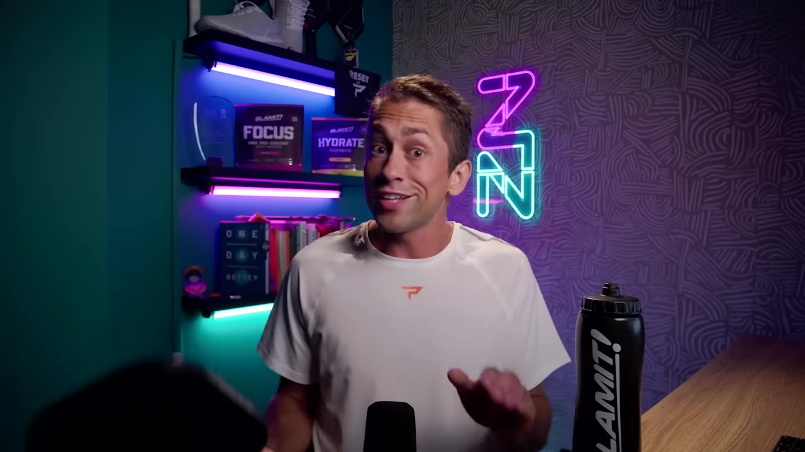
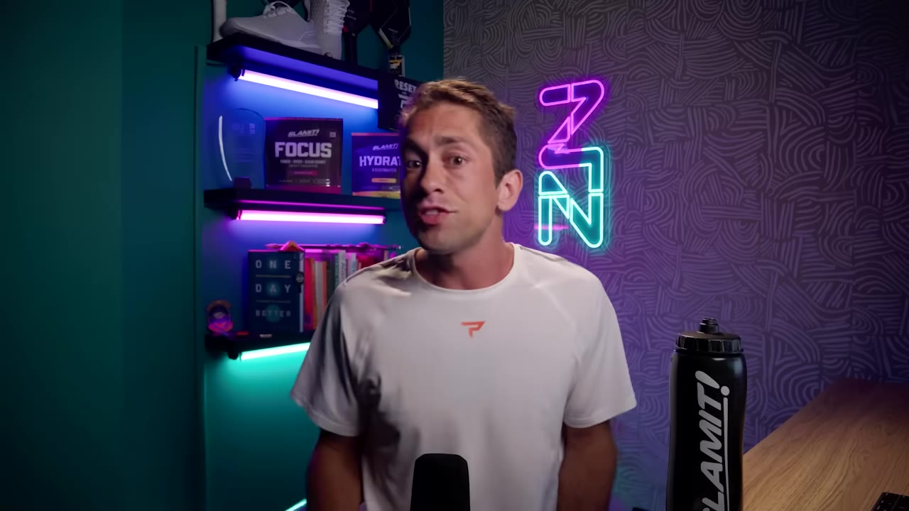
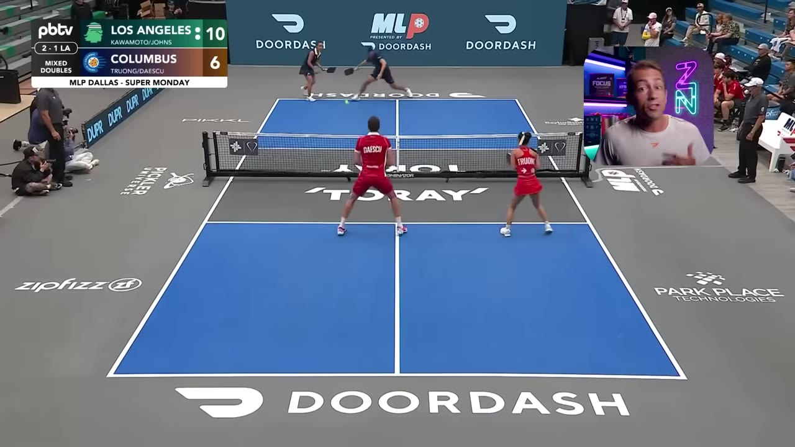
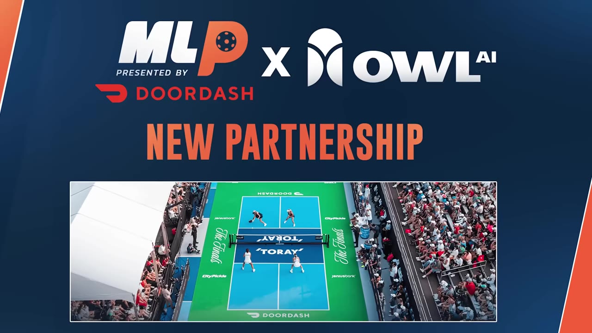

The first Major League Pickleball event of 2026 delivered a new format, unexpected results, and the kind of on-court drama that makes pro pickleball unmissable. LA Madrops took first, Columbus Sliders second, and Ben Johns proved he still has something no one else does.
Watch on YouTubeMajor League Pickleball scrapped the old NHL-style regular-season grind for something far more compelling: two round-robin pools with cross-pool placement playoffs. Finish in your pool, and you're matched against the same-finishing team from the other pool.

This means every pool play match matters. No more dead rubbers where eliminated or clinched teams sit out. The placement bracket looks like this:
Everyone thought the LA Madrops were S-tier. They proved it.
Ben Johns and Jade Koyamato — a new pairing replacing last year's Ben + Katherine Platen combo — started the weekend with a puzzling loss to Tama and Connor of the Black Diamonds. Then came more weird losses. Ben and Jade fell to Bay Area's Pablo and Genie. Katherine Platen and Max lost to Ally Phillips and her brother Danny.

Then Ben turned it on. After dropping both mixed and women's doubles, he played some of the best ball I've seen him play in years. The Madrops won 11-6, then Catherine and Max over Kate and Gabe to force a Dream Breaker — which they won 21 to 15.
In the finals, they took the Columbus Sliders in four games. Ben didn't just play solid — he redlined like we haven't seen in years.
"With Jade, he redlined like we haven't seen for years. He was everywhere. He was dominant and he played well enough for me to admit that I was wrong."
The defending champions showed remarkable resilience without their number one female, Paris (suspended for one MLP event). Danny Townsend filled in at left side — a great fit with both CJ and Paris — and went 4-for-5 on the weekend.

Alex Strong, already the league's best female player, was forced to the bench because Paris's contract takes the lineup spot — a shame for Alex. Columbus's only concern going forward is Dream Breakers: they got smoked 21-7 by the Squeeze in their only Dream Breaker appearance.
St. Louis Shock — The only team with the same lineup from last year (paid $1.3M to keep Anna Bright). They beat the Fives in a Dream Breaker for the fifth straight time. Strong Dream Breaker play with John Lucian Goins over Gabe Tardio.
New Jersey Fives — Made a questionable split of Will/Analia and Georgia/Analia. Analia and Noi went 4-1, but Will and Georgia only 2-3. Soul-searching needed.
Dallas Flash — Georgia's departure was a "generational fumble." Albi Huang replaced Tyra in Dream Breakers (surprising, as both are great singles players). Secured 5th.
Texas Ranchers — The perennial "one piece away" team. Lean lineup, consistent performances, but still not quite a legit contender.
Orlando Squeeze — Surprisingly strong. Beat the defending champs Sliders 21-7 in a Dream Breaker. Jack on the right has been a nice surprise.
Utah Black Diamonds — The headline was Tama's integration, but the team went 1-and-5. Only two wins without Tama playing.
Bay Area Breakers, Carolina Hogs, Phoenix Flames — All eliminated. Carolina's waiver-wire approach is a reminder MLP needs a salary floor.

New UPA rules were in effect for the first time in the US. Federico Stafford didn't know that stepping on the court is now a card — calling the rule itself "dumb" in a post-match interview.
Sideline electronics — Bay Area got a mark for using phones on the sideline. The intent is fair, but it's unclear if this is aimed at the social media manager or coaches.
AI Line Calling — Owl AI's system looked accurate within a couple inches, which is not good enough. These calls are often decided by millimeters. Without transparency into what the AI is actually seeing, the league can't trust it yet.
This was the story of the weekend. Zay had previously claimed Hayden Patrick has the higher ceiling in pickleball. This weekend, Ben showed why that takes nuance.
"Not only is Ben the most consistently high quality player with the highest floor, but he proved that he still has the highest ceiling in pickleball. Great day for my haters."
When Ben plays with Jade, he doesn't need to redline — he plays solid and lets the other team take the risk. But with Jade, he redlined like we haven't seen for years. Zay's honest admission — and his willingness to update his take when the evidence changed — is exactly what this community needs.
I've been wrong previously, and I will absolutely definitely be wrong again. But I'm not going to double down just because when new information comes to light, I'll admit when I'm wrong.— Zay Evertil
Ben is the most consistently high-quality player in pickleball — period.
When Ben is redlining (rare, but this weekend proved it's back), he's untouchable.
Still untouchable at his best — but Ben's floor is so high it matters more.